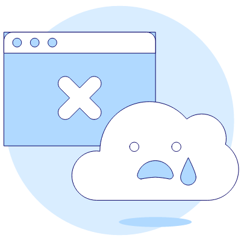

<ion-header [translucent]="true">
  <ion-toolbar>
    <ion-title>e404</ion-title>
  </ion-toolbar>
</ion-header>

<ion-content class="ion-padding">

  

  <ion-button routerLink="/login" class="ion-margin-top"> 
    Regresar
  </ion-button>
</ion-content>
